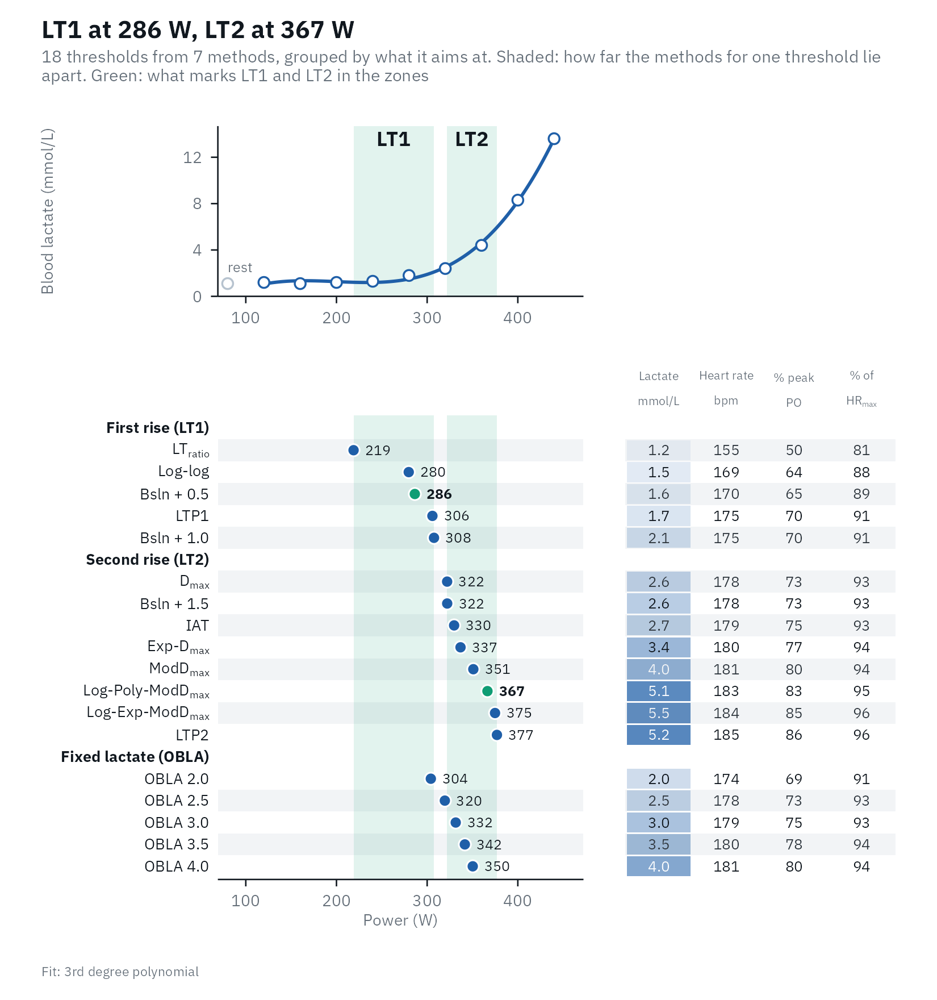
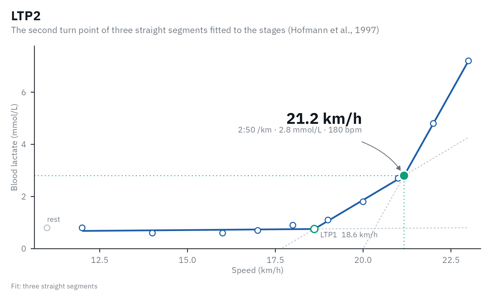
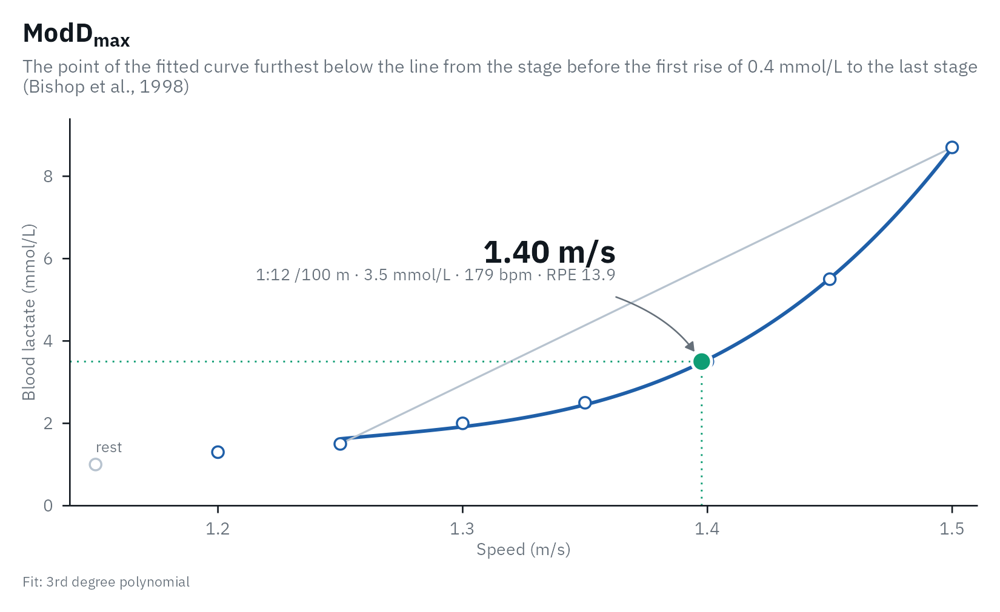
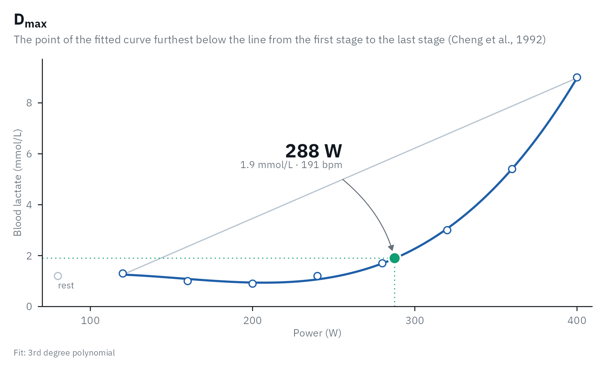

lactate_tests holds 16 incremental step tests, one row
per stage, so you can try every part of lactater on data that looks like
what you will collect. Twelve are real tests from two open datasets
(Trinity College Dublin, and Heuberger et al.,
2018; both CC BY 4.0); four are simulated where no open data exists.
This article walks through them: what each sport looks like, and the
cases that need care.
library(lactater)
library(dplyr)
library(gt)
lactate_tests |>
distinct(sport, test, description, source) |>
gt(groupname_col = "sport") |>
cols_label(test = "Test", description = "Description", source = "Source") |>
tab_style(cell_text(font = "IBM Plex Mono", size = px(13)), cells_body(columns = test)) |>
gt_lactater() |>
tab_options(row_group.text_transform = "capitalize")| Test | Description | Source |
|---|---|---|
| cycling | ||
| cycling_elite | Elite male cyclist, 6.6 W/kg at peak (3-min stages) | Trinity College Dublin (CC BY 4.0) |
| cycling_female | Trained female cyclist, 5.0 W/kg at peak (3-min stages) | Trinity College Dublin (CC BY 4.0) |
| cycling_early_dip | Trained male cyclist whose lactate dips after the first stage (3-min stages) | Trinity College Dublin (CC BY 4.0) |
| cycling_series_1 | Trained male cyclist, test 1 of 6 (3-min stages) | Trinity College Dublin (CC BY 4.0) |
| cycling_series_2 | Trained male cyclist, test 2 of 6 (3-min stages) | Trinity College Dublin (CC BY 4.0) |
| cycling_series_3 | Trained male cyclist, test 3 of 6 (3-min stages) | Trinity College Dublin (CC BY 4.0) |
| cycling_series_4 | Trained male cyclist, test 4 of 6 (3-min stages) | Trinity College Dublin (CC BY 4.0) |
| cycling_series_5 | Trained male cyclist, test 5 of 6 (3-min stages) | Trinity College Dublin (CC BY 4.0) |
| cycling_series_6 | Trained male cyclist, test 6 of 6 (3-min stages) | Trinity College Dublin (CC BY 4.0) |
| cycling_5min_no_rest | Well-trained male cyclist, 5-min steps, no resting sample | Heuberger et al. 2018 (CC BY 4.0) |
| untrained | Simulated untrained man, fitness client (3-min stages) | simulated |
| submaximal | Simulated submaximal test, stopped at about 3 mmol/L | simulated |
| running | ||
| running | Trained male runner, treadmill at 0% grade (3-min stages) | Trinity College Dublin (CC BY 4.0) |
| running_recreational | Simulated recreational male runner, treadmill at 2% grade, 3-min stages of +2 km/h | simulated |
| rowing | ||
| rowing | Trained male rower, 3 min work + 1 min rest per stage | Trinity College Dublin (CC BY 4.0) |
| swimming | ||
| swimming | Simulated elite female swimmer, 7 x 200 m step test | simulated |
A small helper analyses one test, with heart rate and RPE when they were recorded (the RPE of the four simulated tests is simulated too):
analyse <- function(name, ...) {
one <- lactate_tests |>
filter(test == name)
hr <- if (!anyNA(one$heart_rate)) "heart_rate"
rating <- if (!anyNA(one$rpe)) "rpe"
one |>
lactate_threshold(
intensity, lactate, heart_rate_column = hr, rpe_column = rating, sport = first(one$sport), plot = FALSE, ...
)
}How far apart do the methods land?
Every method answers a slightly different question, so on the same test they land at different intensities. Here, for each test, the lowest and highest threshold as a percentage of the highest intensity of the test:
spread <- lactate_tests |>
distinct(test, sport) |>
mutate(thresholds = purrr::map(test, \(name) {
analyse(name, ltp_breakpoints = if (name == "submaximal") 1 else 2) |>
relative_thresholds() |>
select(method, percent_peak)
})) |>
tidyr::unnest(thresholds) |>
summarise(
thresholds = sum(!is.na(percent_peak)),
lowest = round(min(percent_peak, na.rm = TRUE)),
highest = round(max(percent_peak, na.rm = TRUE)),
.by = c(test, sport)
)
spread
#> # A tibble: 16 × 5
#> test sport thresholds lowest highest
#> <chr> <chr> <int> <dbl> <dbl>
#> 1 cycling_elite cycling 18 50 86
#> 2 cycling_female cycling 18 58 89
#> 3 cycling_early_dip cycling 18 52 85
#> 4 cycling_series_1 cycling 18 53 91
#> 5 cycling_series_2 cycling 18 45 87
#> 6 cycling_series_3 cycling 18 50 86
#> 7 cycling_series_4 cycling 18 49 81
#> 8 cycling_series_5 cycling 18 51 90
#> 9 cycling_series_6 cycling 18 50 83
#> 10 running running 20 68 94
#> 11 rowing rowing 18 42 85
#> 12 cycling_5min_no_rest cycling 18 63 90
#> 13 swimming swimming 18 80 96
#> 14 untrained cycling 18 39 82
#> 15 submaximal cycling 15 58 100
#> 16 running_recreational running 20 42 88In every test the thresholds span a wide part of the intensity range, from the first rise of lactate to the methods aimed at the maximal lactate steady state. That is why a threshold means little without the name of its method, and why Training zones asks you to choose LT1 and LT2.
Cycling: an elite and a trained rider
Power in watts, 3-min stages. The elite rider reached 440 W, 6.6 W/kg; the trained female rider 300 W, 5.0 W/kg. Same methods, very different curves.
elite <- analyse("cycling_elite")
autoplot(elite)
Per kg of body mass, and as a percentage of the highest power, the two riders can be compared:
female <- analyse("cycling_female")
body_mass <- function(name) {
lactate_tests |>
filter(test == name) |>
pull(body_mass) |>
first()
}
bind_rows(
cycling_elite = relative_thresholds(elite, body_mass("cycling_elite")),
cycling_female = relative_thresholds(female, body_mass("cycling_female")),
.id = "rider"
) |>
filter(method %in% c("LTP1", "LTP2")) |>
select(rider, method, intensity, intensity_per_kg, percent_peak)
#> Warning: Unknown or uninitialised column: `method_category`.
#> # Lactate thresholds: cycling, 3rd degree polynomial, 9 stages + rest
#> # LT1: 286 W (Bsln + 0.5)
#> # LT2: 367 W (Log-Poly-ModDmax)
#> rider method intensity intensity_per_kg percent_peak
#> <chr> <fct> <dbl> <dbl> <dbl>
#> 1 cycling_elite LTP1 306 4.56 69.5
#> 2 cycling_elite LTP2 377 5.63 85.7
#> 3 cycling_female LTP1 208 3.43 69.2
#> 4 cycling_female LTP2 265 4.37 88.2Running: speed and pace
Treadmill speed in km/h at 0% grade. lactater adds the pace (s/km) and shows it as minutes per km in the plots.
running <- analyse("running")
running |>
filter(method %in% c("Log-log", "OBLA 4.0", "LTP2")) |>
select(method, intensity, pace, lactate, heart_rate)
#> Warning: Unknown or uninitialised column: `method_category`.
#> # Lactate thresholds: running, 3rd degree polynomial, 10 stages + rest
#> # LT1: 19.4 km/h (Bsln + 0.5)
#> # LT2: 20.7 km/h (Log-Poly-ModDmax)
#> method intensity pace lactate heart_rate
#> <fct> <dbl> <dbl> <dbl> <dbl>
#> 1 Log-log 17.9 201. 0.7 157
#> 2 OBLA 4.0 21.6 167. 4 182
#> 3 LTP2 21.2 170. 2.8 180
autoplot(running, "LTP2")
running_recreational is a simulated recreational runner
tested on the protocol of Roecker et al.
(1998) (2% grade, +2 km/h every 3 min from 6 km/h), so
predict_performance() applies their race-time equations as
published.
Rowing: power and the 500 m split
Ergometer power in watts, with 1 min of rest between 3-min stages.
The pace column is the Concept2 split (s/500 m), from
watts = 2.80 / pace^3 with pace in s/m.
rowing <- analyse("rowing")
rowing |>
filter(method %in% c("Log-log", "ModDmax", "IAT")) |>
select(method, intensity, pace, lactate)
#> Warning: Unknown or uninitialised column: `method_category`.
#> # Lactate thresholds: rowing, 3rd degree polynomial, 8 stages + rest
#> # LT1: 203 W (Bsln + 0.5)
#> # LT2: 309 W (Log-Poly-ModDmax)
#> method intensity pace lactate
#> <fct> <dbl> <dbl> <dbl>
#> 1 Log-log 201 120. 1
#> 2 ModDmax 294 106 3.6
#> 3 IAT 258 111. 2.3Swimming: speed in m/s (simulated)
A 7 x 200 m step test, +0.05 m/s per step. Speeds are shown to 0.01 m/s, and the pace per 100 m.
swimming <- analyse("swimming")
swimming |>
filter(method %in% c("Log-log", "ModDmax", "IAT")) |>
select(method, intensity, pace, heart_rate, rpe)
#> Warning: Unknown or uninitialised column: `method_category`.
#> # Lactate thresholds: swimming, 3rd degree polynomial, 7 stages + rest
#> # LT1: 1.23 m/s (Bsln + 0.5)
#> # LT2: 1.43 m/s (Log-Poly-ModDmax)
#> method intensity pace heart_rate rpe
#> <fct> <dbl> <dbl> <dbl> <dbl>
#> 1 Log-log 1.36 73.7 179 12.2
#> 2 ModDmax 1.4 71.5 179 13.9
#> 3 IAT 1.37 73.2 179 12.7
autoplot(swimming, "ModDmax")
Cases that need care
An early lactate dip
Lactate can fall after the first stage, when the warm-up was hard or
short. lactate_checks() flags it, because it shapes
Dmax and the baseline of Bsln+.
dip <- analyse("cycling_early_dip")
lactate_checks(dip)
#> 10 checks: 9 passed, 1 note, 0 warnings
#> ✔ Stages 8 stages.
#> ✔ Resting sample Present.
#> ✔ Thresholds found All thresholds were found.
#> ✔ Edge of the range No threshold sits at the first or last stage.
#> ℹ Early lactate dip The first stage is 0.4 mmol/L above the lowest later stage; it shapes Dmax and Bsln+. Check warm-up and sampling.
#> ✔ Final stage Lactate rose in the last stage.
#> ✔ Peak lactate 9.0 mmol/L.
#> ✔ Sample type blood lactate.
#> ✔ LT1 Within 22% of peak (5 methods, LTratio 208 to Bsln + 1.0 298).
#> ✔ LT2 Within 13% of peak (8 methods, Dmax 288 to LTP2 341).
autoplot(dip, "Dmax")
No resting sample, 5-min steps
The Heuberger
et al. (2018) test starts at 175 W with no resting sample. Bsln+
then uses the first stage as its baseline, and
lactate_checks() says so.
no_rest <- analyse("cycling_5min_no_rest")
lactate_checks(no_rest) |>
filter(check == "Resting sample")
#> 1 check: 0 passed, 1 note, 0 warnings
#> ℹ Resting sample No resting sample (intensity 0): Bsln+ uses the first stage as the baseline.A submaximal test
The simulated client stopped at about 3 mmol/L, before the second
turn point. Fitting two turn points would invent one;
ltp_breakpoints = 1 fits only LTP1, and
lactate_checks() suggests it when peak lactate stays
low.
lactate_checks(analyse("submaximal")) |>
filter(check %in% c("Thresholds found", "Peak lactate"))
#> 2 checks: 0 passed, 0 notes, 2 warnings
#> ⚠ Thresholds found Not found within the tested range: OBLA 3.5, OBLA 4.0.
#> ⚠ Peak lactate Peak lactate was 3.0 mmol/L, below the ~4 mmol/L where LTP2 usually sits: the test may have stopped before LTP2. If it was submaximal, use `ltp_breakpoints = 1`.
submaximal <- analyse("submaximal", ltp_breakpoints = 1)
submaximal |>
filter(method %in% c("LTP1", "LTP2", "OBLA 4.0")) |>
select(method, intensity, lactate)
#> Warning: Unknown or uninitialised column: `method_category`.
#> # Lactate thresholds: cycling, 3rd degree polynomial, 6 stages + rest
#> # LT1: 101 W (Bsln + 0.5)
#> # LT2: 144 W (Log-Poly-ModDmax)
#> # Checks: 1 warning, see lactate_checks()
#> method intensity lactate
#> <fct> <dbl> <dbl>
#> 1 OBLA 4.0 NA 4
#> 2 LTP1 135 1.7
#> 3 LTP2 NA NAOne athlete over five and a half years
The six cycling_series tests come from one rider. See Comparing tests for how to tell a real change
from noise.
lactate_tests |>
filter(athlete == "cyclist_series") |>
lactate_threshold(intensity, lactate, method = "LTP", plot = FALSE, .by = "day") |>
select(day, method, intensity, lactate)
#> # A tibble: 12 × 4
#> day method intensity lactate
#> <int> <fct> <dbl> <dbl>
#> 1 0 LTP1 222 0.9
#> 2 0 LTP2 301 2.3
#> 3 58 LTP1 257 0.9
#> 4 58 LTP2 341 3.2
#> 5 163 LTP1 248 0.9
#> 6 163 LTP2 339 3.2
#> 7 1107 LTP1 178 0.7
#> 8 1107 LTP2 274 2.6
#> 9 1865 LTP1 264 0.7
#> 10 1865 LTP2 350 3.3
#> 11 2046 LTP1 263 1
#> 12 2046 LTP2 337 2.7References
Heuberger JAAC, Gal P, Stuurman FE, de Muinck Keizer WAS, Mejia Miranda Y, Cohen AF. Repeatability and predictive value of lactate threshold concepts in endurance sports. PLOS ONE. 2018;13(11):e0206846. doi:10.1371/journal.pone.0206846
Trinity College Dublin graded exercise test data. Zenodo. doi:10.5281/zenodo.10841412